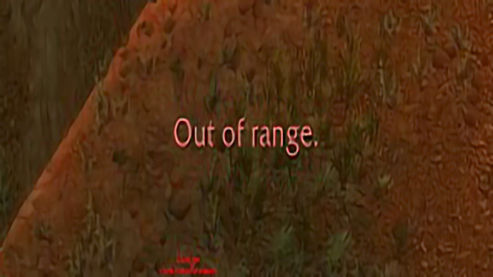
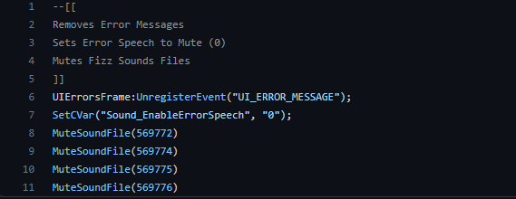

Overview
In this article I am going to talk about a very simple addon I made for a game called 'World of Warcraft', the game itself is not particularly important in the topic besides the fact that it allows you to create modificaitons to how the game runs data through LUA API.

Addon information
The addon itself gets rid of 3 types of 'error notifcations', one being red error text which appears when an ability is pressed when the ability is not ready, the two others are error sounds which both occur the same way the red error text has. I decided to make the addon as after looking online for a simple solution I could not find one for the specific version of the game I was playing, so I decided to make a set of code for the specific version of the game I was playing!

--[[ Removes Error Messages
Sets Error Speech to Mute (0)
Mutes Fizz Sounds Files
]]
UIErrorsFrame:UnregisterEvent("UI_ERROR_MESSAGE");
SetCVar("Sound_EnableErrorSpeech", "0");
MuteSoundFile(569772)
MuteSoundFile(569774)
MuteSoundFile(569775)
Now, the code is quite simple which can be seen on the screenshot and text above, lines 1 to 5 are comments which just state what the general use of the code does, the code is a set of 6 functions, however there are 3 which have different uses.
Line 6 of the code: UIErrorsFrame:UnregisterEvent("UI_ERROR_MESSAGE"); unregisters the red error text which appears on the screen so that it no longer appears.
Line 7 of the code: SetCVAR("Sound_EnableSpeech", "0"); mutes error speech with the command '0' so the error sound is not played.
Line 8 to 11 of the code: MuteSoundFile(569772), line 8 to MuteSoundFile(569776), line 11 mutes error sounds when certain abilities "sections" are pressed in the game.
There is not really much else I have to say about the code
Information About Lua
Some information about the World of Warcraft LUA API:
LUA is a lightweight, high level, multi-paradigm programming language designed primarily for embedded use in applications. Lua is cross-platform since the interpreter of compiled bytecode is written in ANSCI C, and Lua has a realitiveily simple C API to embed it into applications. Lua is one of the most popular programming languages for development of computer games due to its perceived easiness to embved, fast executions and short learning curve.
World of Warcraft introduced the use of their own API, which uses specific functions and facilities in the initial release of the game, however over time Blizzard introduced more, and more functions with upcoming and new development patches. To where at this point LUA can be used to make very complex set of code for a large amount of uses in the game.
Thanks for reading!
-Adam